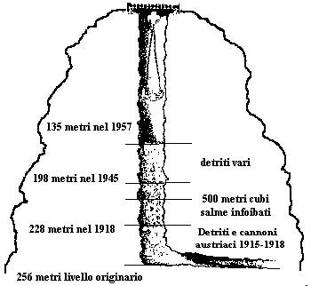

Con l'espressione massacri delle foibe, o spesso solo foibe, si intendono gli eccidi ai danni della popolazione italiana della Venezia Giulia e della Dalmazia, occorsi durante la seconda guerra mondiale e nell'immediato dopoguerra. Il nome deriva dai grandi inghiottitoi carsici dove furono gettati i corpi delle vittime, che nella Venezia Giulia sono chiamati, appunto, "foibe".
Per estensione i termini "foibe" ed il neologismo "infoibare" sono diventati sinonimi di uccisioni che in realtà furono in massima parte perpetrate in modo diverso: la maggioranza delle vittime morì nei campi di prigionia jugoslavi o durante la deportazione verso di essi.
Il fenomeno dei massacri delle foibe è da inquadrare storicamente nell'ambito della secolare disputa fra italiani e popoli slavi per il possesso delle terre dell'Adriatico orientale, nelle lotte intestine fra i diversi popoli che vivevano in quell'area e nelle grandi ondate epurative jugoslave del dopoguerra, che colpirono centinaia di migliaia di persone in un paese nel quale, con il crollo della dittatura fascista, andava imponendosi quella di stampo filo-sovietico, con mire sui territori di diversi paesi confinanti.
Fin dai primissimi giorni di occupazione, i partigiani jugoslavi guidati dal comandante sloveno Franco Pregelj iniziarono un'opera di epurazione non solo degli elementi considerati collusi col precedente regime, ma anche di persone espressamente o anche solo potenzialmente contrarie all'annessione della città alla Jugoslavia. Tale epurazione in qualche caso si risolveva semplicemente coll'allontanamento da una carica o da un posto di lavoro, ma in molti casi con un vero e proprio rastrellamento e la deportazione. Un certo numero di persone venne soppresso immediatamente.
Le stesse fonti jugoslave segnalano svariati casi di arbitrarietà dell'uso della forza, citando arresti senza motivo, omicidi indiscriminati e perfino saccheggi di beni e denaro[1].
Con l'espressione massacri delle foibe, o spesso solo foibe, si intendono gli eccidi ai danni della popolazione italiana della Venezia Giulia e della Dalmazia, occorsi durante la seconda guerra mondiale e nell'immediato dopoguerra. Il nome deriva dai grandi inghiottitoi carsici dove furono gettati i corpi delle vittime, che nella Venezia Giulia sono chiamati, appunto, "foibe".
Per estensione i termini "foibe" ed il neologismo "infoibare" sono diventati sinonimi di uccisioni che in realtà furono in massima parte perpetrate in modo diverso: la maggioranza delle vittime morì nei campi di prigionia jugoslavi o durante la deportazione verso di essi.
Il fenomeno dei massacri delle foibe è da inquadrare storicamente nell'ambito della secolare disputa fra italiani e popoli slavi per il possesso delle terre dell'Adriatico orientale, nelle lotte intestine fra i diversi popoli che vivevano in quell'area e nelle grandi ondate epurative jugoslave del dopoguerra, che colpirono centinaia di migliaia di persone in un paese nel quale, con il crollo della dittatura fascista, andava imponendosi quella di stampo filo-sovietico, con mire sui territori di diversi paesi confinanti.
.

Nel 1919-20 (il "biennio rosso"), l'Italia fu attraversata da un'ondata di tensioni sociali, che coinvolsero anche la Venezia Giulia, dove scoppiarono proteste e agitazioni. Contemporaneamente, l'ostilità slava (e soprattutto slovena) alla riunificazione della Venezia Giulia all'Italia, già palesata con il boicottaggio nei confronti dei civili italiani di ritorno dai campi di concentramento di Wagna e Tapiosuly, si esprimeva con l'accumulo di armi provenienti dal confinante Regno dei Serbi, Croati e Sloveni e con attentati. Queste tensioni, sommate alle preesistenti tensioni nazionali e allo spandersi del cosiddetto "mito della vittoria mutilata", furono fertile terreno per lo sviluppo, in regione, del movimento fascista, che qui assunse particolari connotati (il "fascismo di confine").
Varie furono le azioni violente compiute dagli squadristi fascisti, spesso con il tacito appoggio delle autorità, che li sfruttarono per sedare i disordini: i fascisti si presentarono infatti come i tutori dell'italianità e del mantentimento dell'ordine nazionale e sociale della Venezia Giulia. Il fascismo fu considerato risolutivo da parte di chi temeva la crescita del movimento socialista e di chi voleva risolvere drasticamente il "problema slavo".
L'Hotel Balkan sede del Narodni Dom dopo l'incendio (1920)
Fra gli episodi violenti, il più noto fu l'incendio del Narodni dom ("Casa nazionale slovena") di Trieste, compiuto da squadristi a seguito dell'assassinio da parte di uno sloveno del cuoco o cameriere italiano Giovanni Nini nel corso di una manifestazione antijugoslava provocata dall'assassinio a Spalato di due militari della Regia Marina (tenente Gulli e motorista Rossi) sbarcati disarmati per sedare un tumulto sui moli[34]. Tale incidente assunse a posteriori un forte significato simbolico, venendo ricordato come l'inizio dell'oppressione italiana contro gli slavi.
Violenze per molti versi simili furono compiute anche contro le minoranze (incluse quelle italiane) rimaste sotto l'amministrazione jugoslava (si vedano, ad esempio, gli incidenti di Spalato e la domenica di sangue di Marburgo).